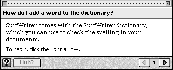

Legacy Document
Important: The information in this document is obsolete and should not be used for new development.
Important: The information in this document is obsolete and should not be used for new development.


Designing Panels
Whenever the user selects a topic from an access window, a presentation panel appears containing a help instruction. A presentation panel is an Apple Guide help window you use to describe a single concept or step. It is referred to here as a panel.Figure 2-20 shows a typical panel in Macintosh Guide.
Figure 2-20 A typical panel in Macintosh Guide
Notice that the panel focuses on only one issue and includes no actions or additional details about a related topic.
When you create a panel, it automatically comes with several features, including navigation arrows; a panel number; and reserved areas for the panel title, help instructions, prompt, and additional controls. You complete the reserved areas and add your own features to the panel following the guidelines in this chapter. The panel has a default layout and text format; you can, however, override these default settings, if necessary.
When you design a panel, it should conform to one of the standard panel types recommended by Apple. Each of these types applies to a different category of help instruction. For example, Figure 2-20 shows an action panel, which is the panel type you use to show a step in a procedure.
Figure 2-21 shows a panel with a pixel grid that is 341 pixels wide. Each box represents a 10-by-10 pixel square, and a filled box appears every 100 pixels.
Figure 2-21 A pixel grid depiction of a panel
The total width of the panel, including the window frame for a System 7.5 window, is 344 pixels, and the panel width within the window frame is 341 pixels. The panel width is a fixed measurement of 344 pixels, which you cannot change using Guide Script commands. The panel height is the distance between the title area (the top bar on the panel) and the navigation bar (the lower bar on the panel). Apple Guide automatically resizes the panel height to accommodate the information that you place in it according to limits that you set with Guide Script commands. You should try to keep the height of each panel as short as possible so that the user can easily keep it onscreen while performing a task.
By default, a panel always first appears in the lower-right portion of the screen. Because panels are movable and float on top of other application windows, users can easily view them while they carry out help instructions. A user can also minimize the panel to make it take less room on the screen. If minimized, the panel height becomes 0, as shown in Figure 2-22.
The next section describes the panel features that Apple Guide provides. It shows how you can create your own designs and also explains different navigation methods you can provide on your panels.
- Note
- If a topic consists of more than one action or concept, you should generally create additional panels; do not place excessive information on a single panel. For more information, see "Designing a Sequence" beginning on page 2-68. You should place more than one concept or action on a single panel under only two circumstances: to tell the user to perform several actions in the same place or to present an alternative way of doing the same task.

Panel Features
By default, panels have the features shown in Figure 2-23.Figure 2-23 A panel with default features
These features include a title area, a content area, and a navigation bar, all of which you need to complete. In addition, you can place on a panel text and objects, including styled or plain text, control features (such as standard and three-dimensional buttons, radio buttons, and checkboxes), PICT graphics, and QuickTime movies, as shown in Figure 2-24.
Figure 2-24 A panel design with text, graphic, and button
You should design your panels to adhere to certain types designed by Apple. For more information, see "Designing Panel Types" on page 2-56.
The sequence display title area is the bar, in the upper portion of the panel, that contains the panel title. The title should match the corresponding topic that appears in the access window. The title of panels should not change within a sequence. In Macintosh Guide, for example, all panels in the sequence associated with the topic "How do I display colors or grays?" use that topic name in their title area. You should always use the full form of the topic for the panel title, regardless of its length. Apple Guide wraps the title text if it is more than a single line.
The content area is the part of the panel between the sequence display title area and the navigation bar (described next) where you place help instructions. This can include text and objects. By default, Apple Guide places the text in the content area in one column. For certain panel types, you override the default format with Guide Script commands and create a two column format; for more information, see "Formatting Panel Text" on page 2-54. To place buttons on the content area, see "Designing Content Area Buttons" on page 2-75. To place graphics on the content area, see "Using Graphics in Panels" on page 2-52.
You should use active voice for all help instructions and keep them as concise as possible. Where possible, you should also keep panels in the same sequence close to the same size by using a similar amount of information on each one; in this way, the window size does not excessively shrink or expand as the user moves through the sequence.
By default, Guide Maker also allocates space in the content area for you to provide a prompt, which provides navigation and other instructions for the user. For more information, see "Designing Panel Prompts" on page 2-44.
The navigation bar is the bar, on the lower portion of the panel, that always displays the left and right navigation arrows the user clicks to move between panels. For each panel, Apple Guide makes the right navigation arrow active or dimmed according to whether the user can navigate to the following panel. Apple Guide makes the left navigation arrow active or dimmed according to whether the user can navigate to the previous panel. Guide Maker automatically assigns a number to each panel (the panel number) in a dynamic sequence. This number appears between the left and right navigation arrows.
You can add up to three additional navigation buttons to the navigation bar. You should always place the GoStart button on the navigation bar of all panels in your guide files. For more information on adding navigation buttons, see "Using Context Checks" on page 2-84.
Designing Panel Prompts
A prompt is the panel text that tells the user what to do (for example, pick an option) and where to go (for example, click a navigation arrow to continue).You should assign a prompt to virtually all panels in your guide file, including the first, middle, and last panels in a sequence, as well as the panels that contain control features (for example, a panel with radio buttons, checkboxes, or standard buttons). These prompts should tell the user what to do and where to go (for example, "Do this step, then you're done"). When you need the full content area of a panel (for example, to include a full-size graphic that takes up the entire content area), you should use a Guide Script command to tell Guide Maker not to allocate prompt space for that panel. If you deallocate the prompt space, you should not place a prompt on the panel.
You specify prompts by defining them in a prompt set, a collection of four prompts that Apple Guide chooses to display based on whether a panel in the sequence is the first, middle, or last, or whether it contains controls (radio buttons, checkboxes, or standard buttons). You can associate a prompt set with
You can designate a particular prompt set as the default prompt set. If you do, Guide Maker uses this prompt set for all panels in all sequences by default. You can override the default on a sequence or panel-by-panel basis.
- all panels in all sequences
- all panels in a specific sequence
- one specific panel in a sequence
To provide the user with clear and consistent instructions throughout your guide file, you should create one or more prompt sets as needed for each type of panel or sequence. Typically, you create a prompt set that works for most of your sequences, and then create other prompt sets to work for panels or sequences with special requirements. You usually specify the most-used prompts as the default prompt set and then override it as needed.
You can use up to 255 characters for a single prompt. Apple Guide places the prompt in attributes 10-point Espy Sans plain and automatically wraps to a second line, generally aligning it with the left margin. If your panel uses the Tag and Body format, described in "Using the Recommended Panel Formats" on page 2-50, Apple Guide aligns the prompt with the Body text.
Designing a Default Prompt Set
If possible, use one prompt set throughout your guide file and make it the default prompt set. Sometimes, however, you need to override the default prompts for an entire sequence or for a particular panel. See the next section for details.Table 2-1 shows a prompt set that Apple has defined for the first, middle, and last panels. This definition assumes that panels might contain standard controls such as checkboxes or radio or standard buttons. Where applicable, you should use this prompt set in your guide file.
Figure 2-25 shows the prompt for the first panel in a sequence that uses the prompt set in Table 2-1. Here, the user clicks the right arrow to begin.
- Note
- In certain cases, you need to override the default panels. See the next section for details.
Figure 2-25 The default prompt for the first panel in a sequence
In contrast, Figure 2-26 shows the recommended prompt for a panel with controls. Note the instructions that precede the radio buttons. You should always include these additional instructions for any panel that contains radio buttons or checkboxes.
Overriding Default Prompts
If, for a particular sequence, the control features or content varies significantly, you should override the default prompt set for that sequence and use a prompt set that is more applicable. For example, if your guide file contains some sequences that describe only tasks and other sequences that describe only concepts, you need two prompt sets: one that tells the user to do actions and the other that tells the user to read information. Similarly, if your guide file contains a sequence that uses special navigation buttons rather than the standard navigation arrows, you need to use a prompt set that tells the user to click buttons rather than arrows.You should also override a default prompt that does not apply to the control feature of a particular panel in a sequence; for example, if a panel in a sequence uses special navigation buttons that do not appear on other panels in that sequence, it requires a unique prompt.
Certain panel types recommended by Apple require that you override the recommended prompt set and use a more applicable prompt, as shown in Table 2-2.
Override prompts by panel type Panel type Override prompt Continue After the action occurs, click Continue.[1] Panel associated with a Huh? button[2] Read this information, then you're done. Definition Read this information, then you're done. Tip Read this information, then you're done. Related topics Read this information, then you're done. Closure panel that does not contain a final step That's all, you're done. For more information on these panel types, see "Designing Panel Types" beginning on page 2-56.
Using the Recommended Panel Formats
To format your panels, Apple recommends that you use either the Full format or the Tag and Body format. In general, you should use the Full format for panels unless they describe an action or contain lengthy introduction text, in which case, you should override it and use the Tag and Body format. (For more information, see "Designing an Action Panel" on page 2-59 and "Designing an Introductory Panel" on page 2-57.) If necessary, you can also devise and apply your own format using Guide Script commands. See the next section for details.Figure 2-27 shows a panel with the Full format.
Figure 2-27 A panel with the Full format

The Full format provides the full-panel width--less an 11-pixel margin at each side--as a single column. In addition, it places the prompt just above the navigation bar and aligns it with the left edge of the leftmost format; that is, the text-column or full-panel width (less 11 pixels). It also applies the Apple Guide font--10-point Espy Serif Plain Black--to any text you place on the content area of the panel except text for radio buttons, checkboxes, and standard buttons, which by default appear in the system font. You should use Guide Script commands to specify that these button types instead use the Apple Guide font.
The Tag and Body format refers to using two formats--the Tag format and Body format--together. The Tag format provides a left column that you can use to format tags. A tag is a bold phrase (for example, "Do This" or "Oops") that describes text in the Body format. The Body format provides a right column for text. The Tag and Body format thus divides the panel into two columns, in which the text in the left column uses the Tag format and the text in the right column uses the Body format. Figure 2-28 shows the Tag and Body format for an action panel.
Figure 2-28 A panel with the Tag and Body format
Designing Your Own Panel Format
You can apply your own panel layout and formatting using Guide Script commands. Apple recommends that you use the Full format and Tag and Body format wherever possible in your guide files. In general, you should create your own panel designs only for categories of help instructions that do not use one of the standard panel types recommended by Apple (see "Designing Panel Types" on page 2-56).To provide the user with a consistent and clear panel design, you should use
You can create a column with certain attributes and then use them to simplify the layout of your panel objects. You can then use formats to control the placement of most panel objects, including text paragraphs, checkboxes, and radio buttons; PICT graphics and QuickTime movies; and labels for graphics. Guide Maker places panel text formatted this way inline in the boundaries specified by the format's column and according to the format's attributes. For example, you can define a format whose bounds are defined by a column beginning with a top coordinate of 50 and a left coordinate of 75 that extends horizontally for 100 pixels. If you then specify centering a radio button in this column, it appears in the center of the column and not in the center of the panel.
- simple designs, so that the user can focus on the panel's information rather than on its appearance
- the same design for all panels of the same type
- only a small number of designs, so that the interface appears simple and consistent
- a design that will not significantly increase the panel height, to avoid excessive shrinking or expansion of the window size as the user moves through sequences
You can also apply a format to Guide Maker commands that place text and objects in that panel. When you do, the format overrides all other previously specified formats, including the Full format. Guide Maker places inline the panel objects that follow the specified format in the boundaries specified by the format's column coordinates. Guide Maker also refers to this format to assign panel text attributes and to align prompts.
Using Graphics in Panels
Graphics increase the size of your guide files and should therefore be used sparingly. In general, you should use them only to describe an application feature that you cannot access using a coachmark. For more information on using coachmarks, see "Designing Coachmarks" beginning on page 2-81. You can also occasionally use a graphic to illustrate a concept (for example, to show relationships between several application features).If you use a graphic to depict an onscreen item that the user can normally click or move (for example, an icon), you should indicate that the item is a graphic and not the actual item. For example, enclose the item in a box or place shading behind it (for an example, see Figure 2-34 on page 2-60).
To specify a picture in a panel, you must place it in a resource file or PICT format file and identify it to Guide Maker with its resource ID, resource name, or filename. You must also specify a replacement picture that is used only if the bit depth of the user's monitor is set to 4 bits or fewer. You should use the same size for both pictures. You can specify the picture's general location to be left, right, or center. When you do, Guide Maker places the picture justified within the current format.
You can have Apple Guide place the graphic inline with the surrounding text and justify it within the current format (relative positioning) or you can specify the button's location relative to the current pen position by specifying a specific point (absolute positioning).
For example, Figure 2-29 shows a Macintosh Guide panel containing a graphic centered with relative positioning.
- IMPORTANT
- The pen location is the place where Apple Guide returns to place an object. The current pen location is not reset after you place an object with absolute positioning.

Figure 2-29 A panel containing a graphic centered with relative positioning
For optimal localization, Apple recommends that you use relative rather than absolute positioning of objects on the panel. (When translated into another language, panel text can increase and possibly overflow onto a panel object.) To create a graphic that contains hot rectangles, however, use absolute positioning. For more information about hot rectangles, see "Designing Hot Text, Objects, and Rectangles" on page 2-79.
Formatting Panel Text
All panel text follows certain attributes. In general, almost all text that you place in the content area of a panel appears in the Apple Guide font--10-point Espy Serif Plain Black--by default. Apple Guide also automatically applies the text font, type size, and attributes to the panel title and prompt; the title bar is 10-point Espy Sans Bold and the prompt is Espy Sans 10 Plain. In addition, Apple Guide places all tags in attributes 10-point Espy Sans Bold.
You can apply any formatting attributes to the Apple Guide font. When you format text yourself, use consistent styling conventions that enhance the clarity of your help instructions. Here are some suggestions:
- Note
- By default, text associated with radio buttons, checkboxes, and standard buttons uses the system font. You should use Guide Script commands to specify that these button types instead use the Apple Guide font, so that they match the other text on the panel.
If you plan to localize your guide files, you need to be aware of possible side effects of using styled text. For more information, see "Designing for Localization" on page 2-93.
- Use an underscore to indicate hot text.
- Use boldface type sparingly so that it effectively calls out crucial information to the user (for example, do not use boldface type to simply introduce a section of information on a panel but do use it to lead the user's attention to a warning or important note).
- Use text attributes that are easy to read. For example, some users find it difficult to read italic type. Apple therefore recommends that you instead use quotes for emphasis.
- Use the same formatting conventions throughout your guide files. For example, if you use quotes to enclose book title names on a panel, follow that same convention throughout.
Providing Navigation Methods on Panels
The user can navigate through panels using the left and right arrow buttons, other navigation buttons, content area buttons, and hot areas (including hot text, hot objects, and hot rectangles).
Apple Guide always displays left and right navigation arrows in the navigation bar of each panel. These arrows are described in "Panel Features" beginning on page 2-43. For most panels, you must specify a navigation prompt that tells the user where to go, for example, "Click the right arrow to continue". (Certain panels instead require a prompt that tells the user what to do, for example, "Read this panel, then you're done.") For guidelines on creating prompts, see "Designing Panel Prompts" beginning on page 2-44.
- With the navigation arrows, the user can move backwards and forwards through a sequence, panel by panel.
- With navigation and content area buttons, the user can go to a panel in the same sequence or in another, or can go to the application itself.
- With all three hot types, the user can go to a panel that contains useful but optional information for understanding the original panel.
If a required condition is not true and the user clicks the right arrow button on a panel, you should force the user to go to an Oops or Continue panel instead of the next panel. For more information, see "Using Context Checks" beginning on page 2-84.
You can add up to three buttons in the navigation bar of a panel to supplement the default navigation arrows. (The default navigation arrows still appear on the navigation bar, even if a panel does not use them.)You should use the same navigation bar buttons consistently throughout a sequence and, if possible, throughout your entire guide file. You should always add to the navigation bar of each panel a GoStart button, which takes the user back to the access screen. You can also add a Huh? button, which, if active, will take the user to another panel containing crucial information. The panel associated with the Huh? panel opens on top of the original panel, allowing the user to read its information and return easily to the original panel.
You can also add buttons to the content area of a panel if you want to provide a navigation route specific to a particular panel. For example, you can add a button that takes the user to a QuickTime movie applying only to that panel.
For complete guidelines on creating navigation and content area buttons, see "Designing Buttons" beginning on page 2-72.
You should use hot text, objects, and rectangles to provide the user with information that is useful but not crucial. You can take the user to a panel you created specifically for the hot type or to a panel that exists in another sequence. Like the Huh? panel, the panel associated with a hot area opens up on top of the original panel. For more information, see "Designing Hot Text, Objects, and Rectangles" on page 2-79.
[1] Replace the italic text in the prompt with text specific to the action being performed.
[2] Use only for panels that you specifically create for and associate with a Huh? button. Do not use for existing panels in the guide file that you associated with a Huh? button and that already have an assigned prompt.